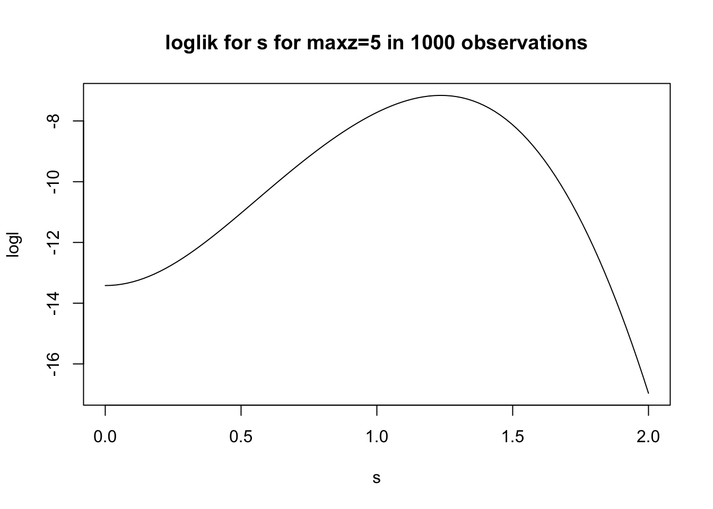

Last updated: 2016-12-02
Code version: 204c3424750c9419c4ae2f4c79567f8915e910d5
Suppose you know that the maximum of \(n\) \(z\) scores is zmax. What does that tell you about the distribution of effects (betahat/s). [Here we are assuming s=1 for all betahat, so betahat and z are the same thing]
Suppose the distribution of the effects is \(N(0,\sigma^2)\). So the distribution of the \(z\) scores is \(N(0,1+\sigma^2)\). The max z score is
#This function computes the log probability density of zmax if the distribution of
#effects is N(0,sigma^2)
ldmaxz = function(z,sigma,n){
dnorm(z,mean=0,sd=sqrt(1+sigma^2),log=TRUE) +
(n-1) * pnorm(z,0,sqrt(1+sigma^2),log=TRUE)
}
s = seq(0,1,length=100)
logl = ldmaxz(4, s, 1000)
plot(s,logl,main="loglik for s for maxz=4 in 1000 observations",type="l")logl = ldmaxz(4, s, 10000)
plot(s,logl,main="loglik for s for maxz=4 in 10000 observations",type="l")s = seq(0,2,length=100)
logl = ldmaxz(5, s, 1000)
plot(s,logl,main="loglik for s for maxz=5 in 1000 observations",type="l")
The next question is what happens if we add a point mass at 0 for effects. So \(z \sim \pi_0 N(0,1) + (1-\pi_0) N(0,1+s^2)\).
What does likelihood for \(\pi_0\) and \(s\) look like?
Suppose we have data 1,2,3,4,5,6,7,8,8,8,8,8,8,8,9,10 that is from a monotone density. I argue that in such cases the best explanation for all those 8s is dependence, and that a good estimate of the density would be uniform, rather than the Grenander estimate.
The question is, how to achieve that. Intuitively we might like to reweight the 8s to downweight them. For example, we could assign weights to the observations so that the empirical cdf is equal to \(F\), the Grenander estimate. However, if we reweight by the Grenander estimate itself, the weights from the 8s effectively get put onto the 1…7 observations, which is essentially the behaviour we want to avoid…
sessionInfo()R version 3.3.1 (2016-06-21)
Platform: x86_64-apple-darwin13.4.0 (64-bit)
Running under: OS X 10.11.5 (El Capitan)
locale:
[1] en_US.UTF-8/en_US.UTF-8/en_US.UTF-8/C/en_US.UTF-8/en_US.UTF-8
attached base packages:
[1] stats graphics grDevices utils datasets methods base
other attached packages:
[1] knitr_1.14
loaded via a namespace (and not attached):
[1] magrittr_1.5 assertthat_0.1 formatR_1.4 tools_3.3.1
[5] htmltools_0.3.5 yaml_2.1.13 tibble_1.2 Rcpp_0.12.8
[9] stringi_1.1.2 rmarkdown_1.1 stringr_1.1.0 digest_0.6.10
[13] evaluate_0.10